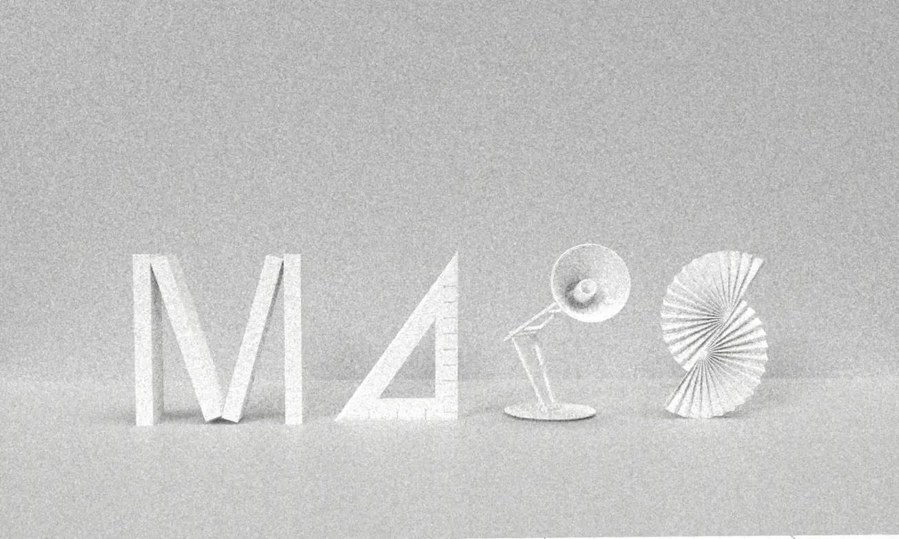

MAPStudio Branding
design
A studio
finds its voice.
A flexible identity for a student creative organisation, combining a dimensional MAP symbol with a warm, hand-drawn verbal system.
IdentityMark, colour and verbal system
PublicationBrochure, from concept to print
3DFusion 360 · Adobe Dimension
DigitalProfile and content views
History becomes
a designed narrative.
An independently delivered publication — from concept and content hierarchy through layout and print — tracing the studio year by year.


Graphics
become objects.
Fusion 360 modelling and Adobe Dimension rendering translated the identity from flat graphics into dimensional marks and physical brand objects.

On screen.
The mark and its tones carry into profile and content views, keeping the studio recognisable wherever it is encountered.